Project overview
These projects connect circuit design, sensor integration, and practical energy applications. Explore each project’s goal, my contribution, and what the prototype demonstrated.
Introduction to ECE Design · August–December 2025
Embedded Sensing & IoT
DAMNED course project
ESP32 / Feather · ThingSpeak · KiCad · Sensors · APIs / JSON
- Goal
- Build and test an embedded system that measures environmental and motion data.
- My contribution
- Designed and assembled PCBs, debugged connections, and integrated a Feather microcontroller with sensors. Paired the final sensing system with a remote-controlled car.
- Outcome / status
- Collected distance, direction, pitch, and roll measurements; analyzed sensor behavior and compared readings across devices.
Read the full project account
As part of my coursework, I also built the DAMNED project, which focused on system integration and the IoT system. I worked with a variety of sensors from temperature sensors to distance sensors and magnetometers.
This course focused on hands-on electrical and computer engineering design through weekly assignments that emphasized simulation, circuit construction, fabrication, coding, and testing of embedded systems. I gained practical experience using industry tools such as KiCad for PCB layout, and Thonny for microcontroller programming. The fabrication and assembly process included both through-hole and surface-mount soldering, using tools like the pick-and-place machine and reflow oven, as well as laser cutting and 3D printing for case design.
Across the design assignments, I worked on designing a PCB, followed by assembly, visual inspection, debugging, and systematic unit testing. I learned how to identify and repair faulty connections, verify circuit functionality through modular testing, and validate system performance using measured input and output data.
Later stages of the course focused on system integration through the DAMNED project, where I incorporated sensors, a Feather microcontroller, and peripherals such as motors and a Neopixel ring. I also worked with APIs, JSON data, and real-time clock functionality to enable data communication and time-based system control. Data collected from sensors was analyzed and visualized to compare performance across devices like temperature and humidity sensors (TMP36, AM2320, AHT20).
In the final project, I developed a sensing system that integrated a distance sensor with a magnetometer and accelerometer to capture both positional and motion-based data while also acting as a compass. This required sensor integration, real-time data collection, and interpretation of multi-source signals to understand system behavior under different conditions. I paired my final project with a remote controlled car to get the sensor readings for distance, direction, pitch and roll when the car was moving, close to an object, tilted or rolled. The sensor data was processed and analyzed to evaluate performance and relationships between environmental and motion variables on the car. The project connected hardware integration with the interpretation of measurements from a moving system.
Overall, the course strengthened my ability to design, build, and test complete embedded systems while reinforcing key skills in hardware-software integration, debugging, and iterative engineering design.
What I take from this project
Pairing the sensing system with a remote-controlled car made the measurements easier to connect to physical behavior. Distance, heading, pitch, and roll described different aspects of the same moving object. This brought together the earlier PCB, wiring, and sensor work: I needed the assembled system and the recorded data to make sense together. It is the part of embedded engineering I want to keep exploring—understanding the signal as well as getting the device to produce it.
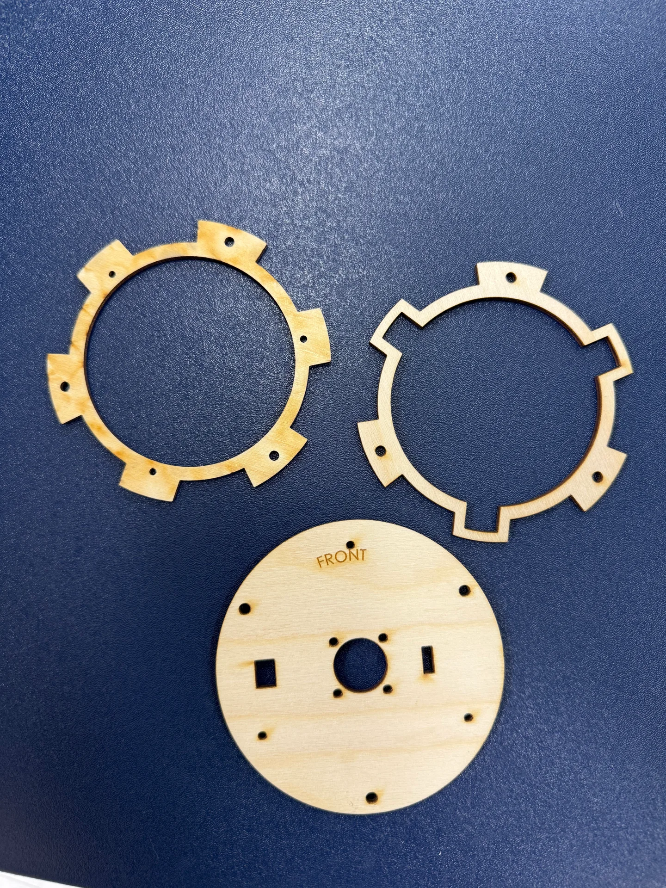
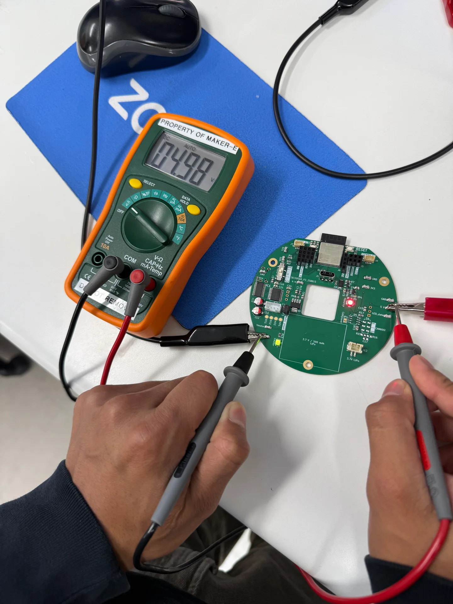
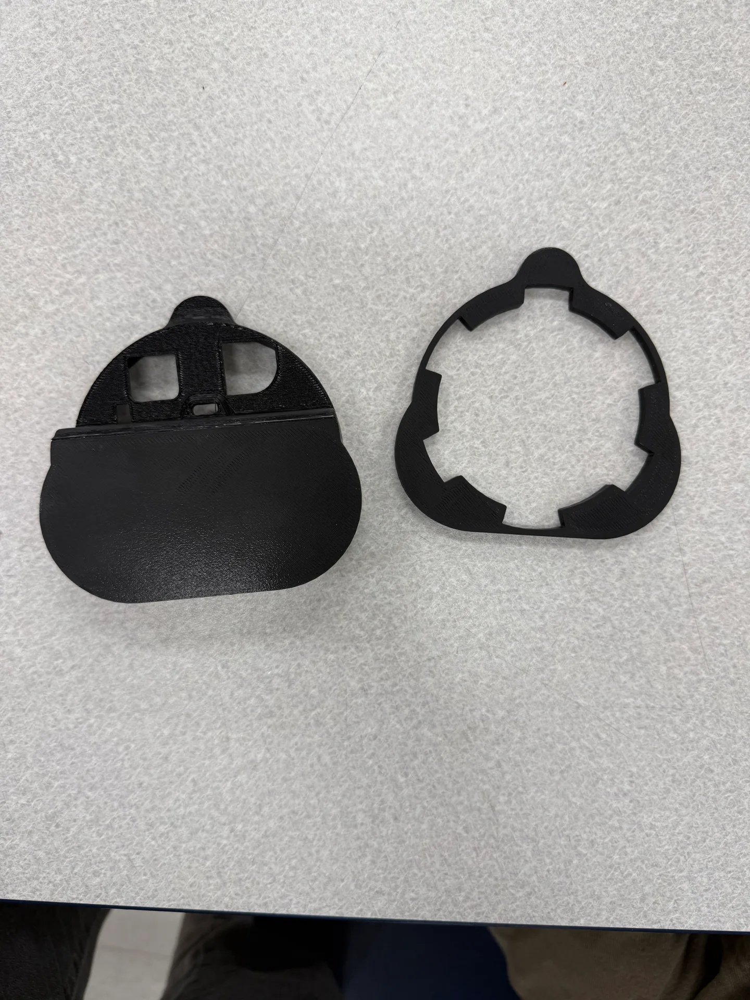
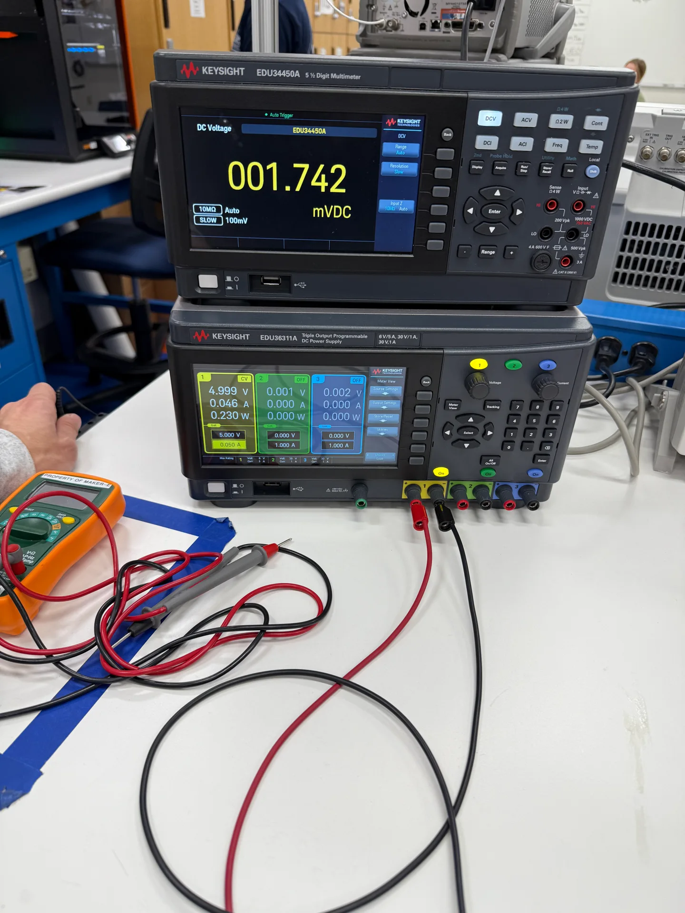
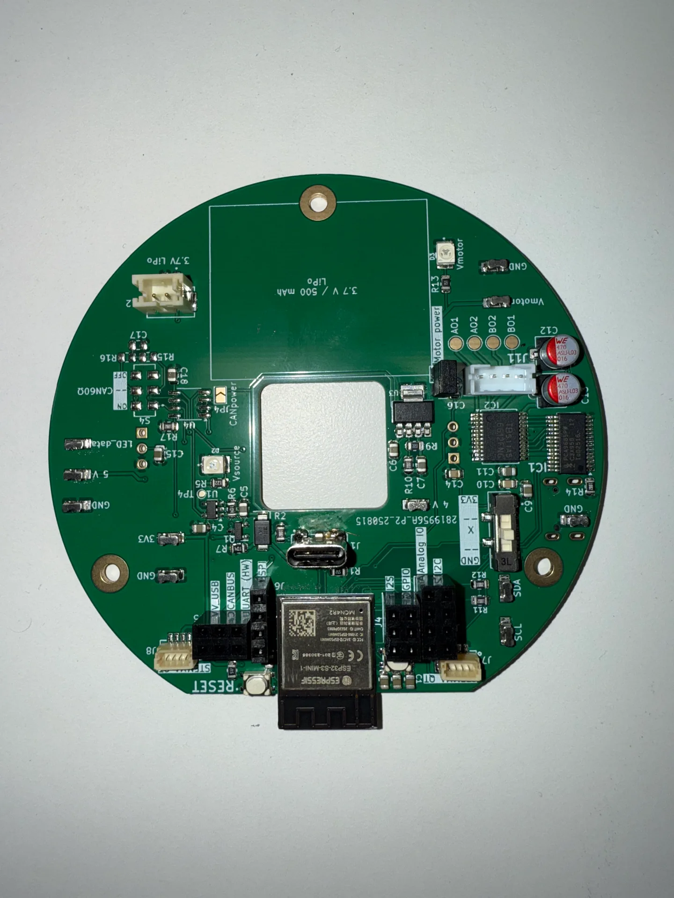
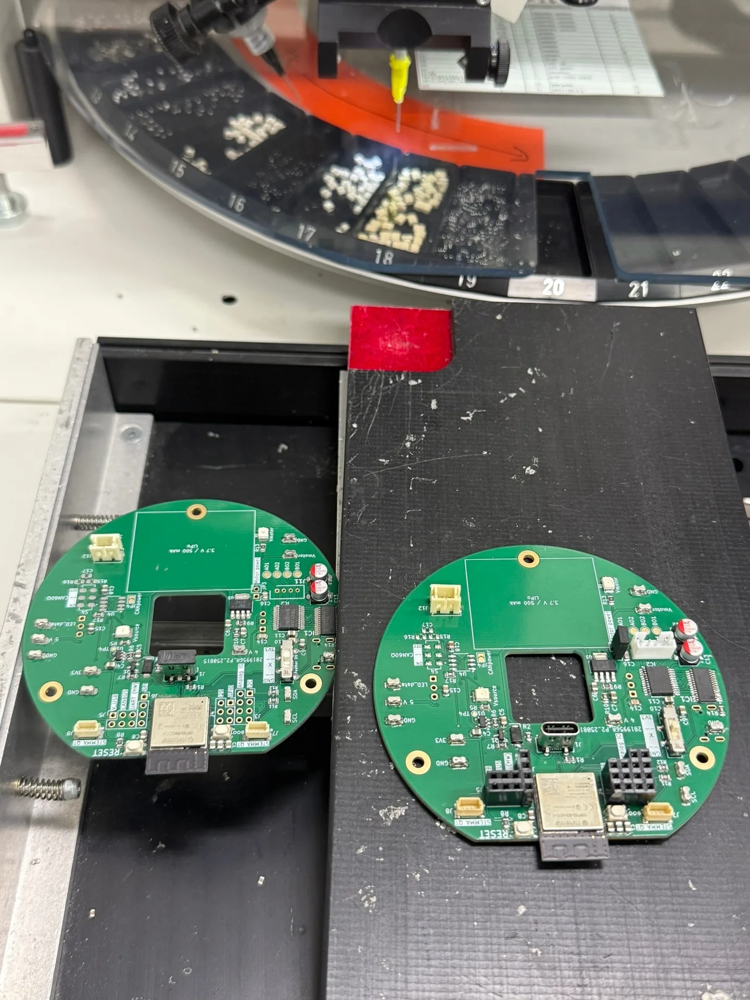
Team course project · August–October 2024 · Prototype
Smart Sustainable Home & Energy App
Microgrid concepts · Solar data · Motion sensors · App prototyping
- Goal
- Explore how the SELL Building could operate as a smart, sustainable microgrid.
- My contribution
- Worked with a team on motion-controlled lighting and fans, a time-of-day control model, solar-data analysis, and an app prototype for household energy monitoring.
- Outcome / status
- The prototype demonstrated appliance control. The project analysis projected a 15% reduction in energy use through appliance regulation, energy storage, and grid sell-back. This was a modeled projection, not measured savings from an installed building system. Presented findings to faculty and engineering peers.
Read the full project account
In my Engineering 100 course, I worked with my group on a design project focused on transforming the SELL Building into a smart, sustainable microgrid system. The building, currently underutilized, was analyzed as a candidate for improved social, environmental, and economic sustainability through energy-aware design and automation.
Our prototype simulated a smart microgrid using motion sensors to control lighting and fan systems, reducing unnecessary energy usage. We also implemented a manual time-of-day dial to model how the building would automatically adjust appliance usage throughout the day for optimal efficiency. We used data from the nearby senior gift solar PV system and analyzed how solar generation could offset grid demand and smooth peak energy loads.
Data analysis showed that solar generation often exceeds demand during sunny conditions, showing the value of load shifting and energy storage strategies. This project introduced me to microgrid thinking, emphasizing how real-time control, renewable integration, and predictive energy management can improve both sustainability and building functionality.
We also developed a prototype smart sustainability app designed to help homeowners monitor and manage their household energy usage. The app visualized which appliances consumed the most electricity and identified usage patterns across different times of day and seasons. It also demonstrated the potential for remote control of appliances, allowing users to switch devices on or off from their phones. In addition, the system concept included features such as energy-saving recommendations and alerts for potentially faulty appliances connected through the same WiFi or Bluetooth network. Although it was a course prototype, the project helped illustrate how IoT-based tools and real-time data tracking can support more efficient and informed energy consumption in residential settings.
What I take from this project
The building prototype and app let us look at energy use from two perspectives. The hardware demonstrated ways to regulate appliances, while the app explored how a person might monitor consumption and make changes. Working on both helped me think about what information is useful to a user, and about the difference between presenting an energy-saving idea and validating its performance in an occupied building.
In progress · Embedded control project
Solar Tracker Prototype
Photovoltaics · Sensors · Embedded control · Calibration
- Goal
- Develop a system that adjusts panel orientation in response to sunlight.
- My contribution
- Working on sensor integration and embedded control to monitor light intensity and guide panel alignment.
- Outcome / status
- Prototype development is ongoing. The intended benefit is improved energy capture; measured efficiency gains have not yet been documented.
Read the full project account
My current project is a solar tracker system designed to improve the efficiency of photovoltaic energy collection by dynamically adjusting panel orientation based on the position of the sun. The system uses sensors and embedded control to continuously monitor light intensity and optimize alignment for maximum energy capture throughout the day. This project builds on my experience with embedded systems, circuit design, and sensor integration, combining hardware and software to create a responsive energy solution. It also reinforces key concepts in renewable energy systems and sustainability, particularly in maximizing solar efficiency and reducing wasted energy. Through this project, I am further developing my skills in real-time control, system calibration, and practical applications of electronics in sustainable engineering design.
What I take from this project
What interests me about this project is the connection between sensing and movement. A light reading has to become a control decision, and that decision has to produce useful panel motion. I’m using the prototype to develop my understanding of that whole process. The next evidence I want to establish is how the tracker behaves under changing light and whether its movement produces a meaningful energy benefit.
Green Solutech · Founder and team lead · October 2023
Automated Non-contact Dustbin
Arduino · Ultrasonic sensing · Servo control
- Goal
- Open a bin lid without physical contact.
- My contribution
- Founded Green Solutech and led a team of three to build an Arduino-based system that reads an ultrasonic distance sensor and triggers a servo. Taught students at Bishop Mixed JHS how the project was built and lectured them about sustainability.
- Outcome / status
- Demonstrated a contactless opening mechanism combining real-time distance sensing with actuator control.
Read the full project account
Prior to college, I also built a smart automated dustbin using an Arduino and an ultrasonic sensor as a hands-on project exploring basic automation and sensor-based control. The system was designed to detect when a person approached the bin and automatically open the lid without any physical contact. The ultrasonic sensor measured distance in real time, triggering a servo mechanism when an object was within a defined range. This project strengthened my understanding of embedded systems, sensor integration, and actuator control, while also demonstrating how simple electronics can be used to improve convenience and hygiene through automation.
What I take from this project
This project also became an opportunity to teach. Leading the Green Solutech team and explaining the dustbin to students at Bishop Mixed JHS connected the build with a wider conversation about electronics and e-waste. I also lectured the students about sustainability, extending the session beyond the components and code to the environmental questions behind the project. The sensing-and-response sequence was something students could observe directly: an approaching object changed the distance reading, and the lid opened. That made the project a useful starting point for explaining what the components were doing.
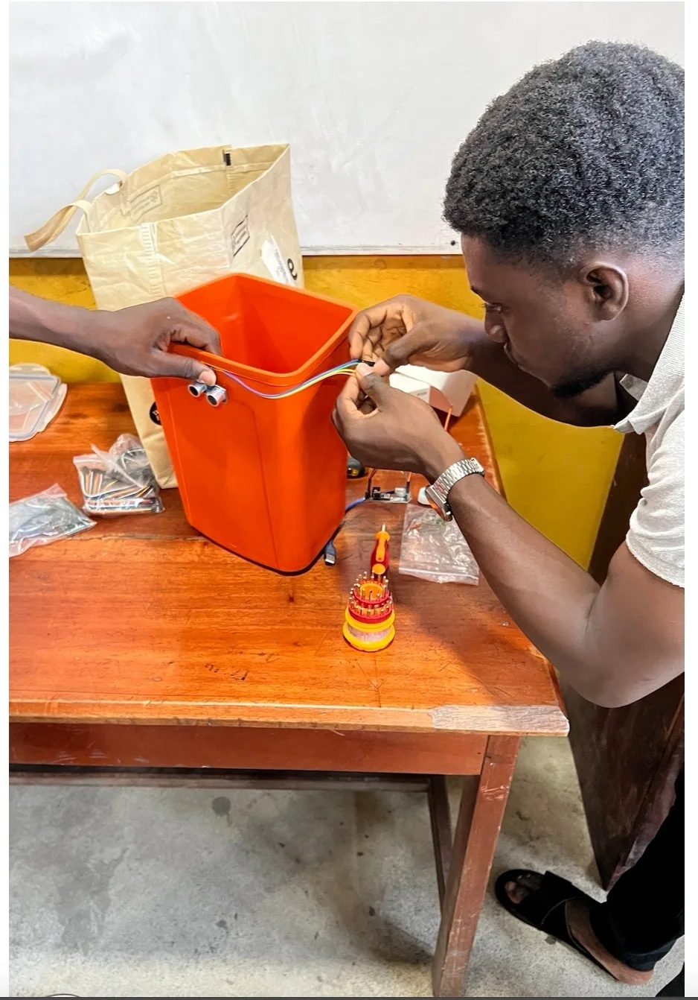
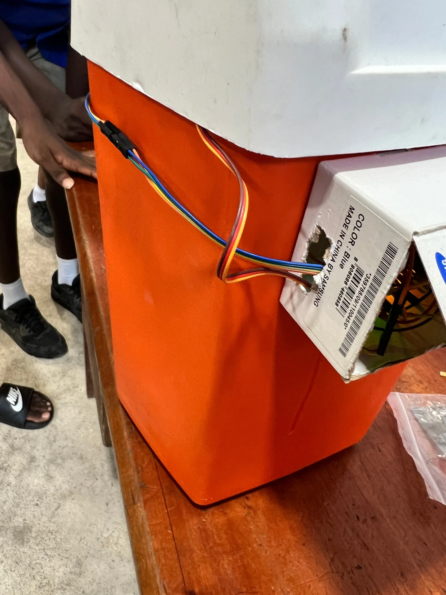
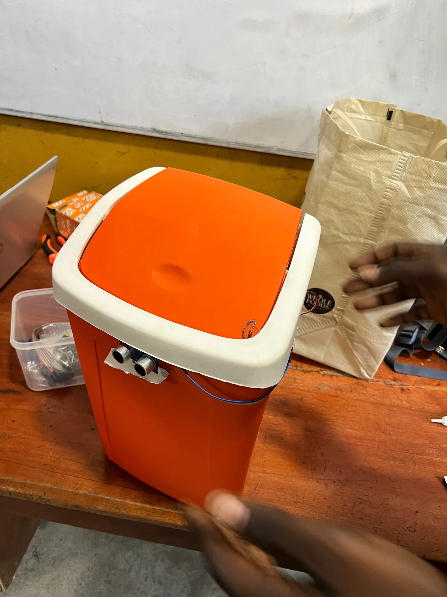
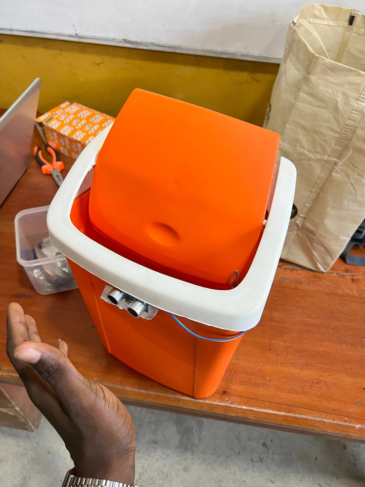
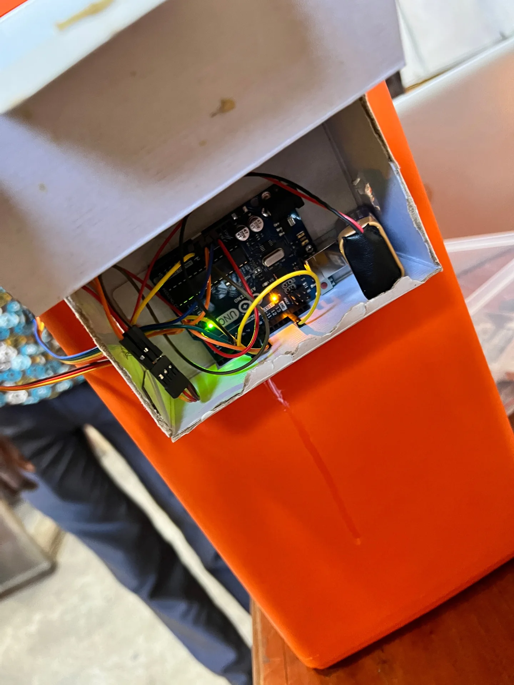